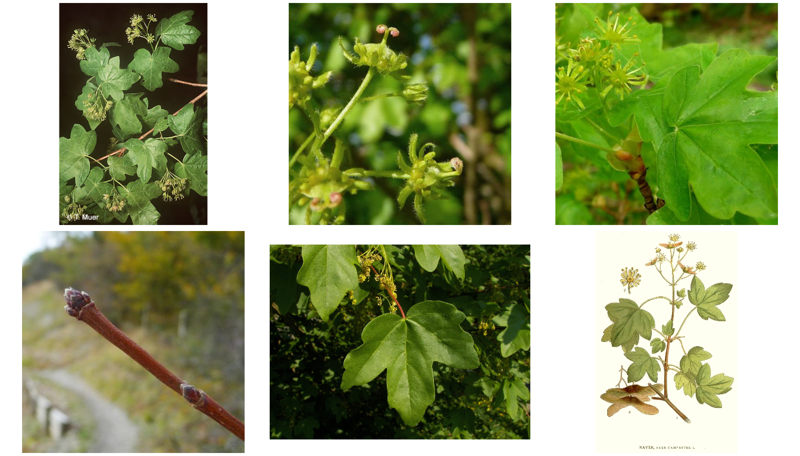

BotanizeR config
Patrick Weigelt, Pierre Denelle
2021-09-06
BotanizeR_config.RmdOverview
BotanizeR is an R-package with Shiny app designed to help botany students and other people interested in plants to learn and distinguish plant diagnostic characters, memorize plant species, and train their identification skills. Students can browse a species list, images, plant characteristics, habitat descriptions and distribution information or play a quiz where images of a random species are shown and students have to guess the correct species.
Lecturers can flexibly define their own species lists and provide images and further useful information, or choose from linked online content from selected botanical online resources to show in BotanizeR. In this Tutorial, we explain how to create own content to present in BotanizeR and how to customize the Shiny app.
Species List
A new species list for BotanizeR needs to be a data.frame containing at least the following columns: NAMNR, TAXONNAME, SPECIES and GENUS. The SPECIES column includes the species name (genus and epithet; character or factor) to be guessed and looked up in the online resources or image folders. The TAXONNAME column includes the full species name including additional information like, for example the authority (character or factor). The GENUS column includes the corresponding genus name (character or factor). NAMNR contains the ID (numeric) of the species used by FloraWeb. In case FloraWeb content is not retrieved, this may be NA.
In addition, the species list should include the numeric columns COUNT, SCORE and ATTEMPTS where the number of times a species was practiced, how often it was guessed correctly and how many attempts were needed will be recorded. At the start these columns include zeros only. In addition, the column INCLUDE indicates whether a species shall be included in the app or not. Here, the default value is 1.
In addition, the species list may contain columns to filter by, as well as columns including own descriptive hints (named like ownhint_Description, ownhint_Distribution, etc.) and links (URLs) to images (imagelink_1, imagelink_2 etc.). These columns can be filled by the lecturer in advance but can also be modified and expanded by the student after downloading the list.
The R package includes an example species list containing the relevant information to run BotanizeR_quiz or the BotanizeR Shiny app for 5852 vascular plant species from FloraWeb and the Online Atlas of the British Irish flora.
data(BotanizeR_species)
BotanizeR_species[c(13:15),
c("NAMNR", # FloraWeb ID
"TAXONNAME","SPECIES","GENUS", # Names to display and guess
"UK_Ireland", "Germany", # Columns to make subsets
"COUNT", "SCORE", "ATTEMPTS", "INCLUDE", # Quiz controls
"ownhint_English_name", "ownhint_Description", # Own hints
"imagelink_1", "imagelink_2")] # Own image links## NAMNR TAXONNAME SPECIES GENUS UK_Ireland Germany COUNT
## 13 6 Acer campestre L. Acer campestre Acer 1 1 0
## 14 10005 Acer cappadocicum Acer cappadocicum Acer 1 1 0
## 15 8 Acer negundo L. Acer negundo Acer 1 1 0
## SCORE ATTEMPTS INCLUDE ownhint_English_name
## 13 0 0 1 Field Maple
## 14 0 0 1 Cappadocian Maple
## 15 0 0 1 Ashleaf Maple
## ownhint_Description
## 13 deciduous tree reaching 15–25 m (49–82 ft) tall, with a trunk up to 1 m (3 ft 3 in) in diameter
## 14
## 15
## imagelink_1
## 13 https://upload.wikimedia.org/wikipedia/commons/thumb/6/66/Acer_campestre_005.jpg/1280px-Acer_campestre_005.jpg
## 14
## 15
## imagelink_2
## 13 https://upload.wikimedia.org/wikipedia/commons/f/f5/237_Acer_campestre.jpg
## 14
## 15Images
Images can be supplied like indicated above by including image URLs into dedicated columns of the species list, or by supplying local folders with jpg or png images. When running the Shiny app locally (on the students computer) these folders need to be on the local computer. If the Shiny app is running on a server, these folders can be supplied by the lecturer on the server (see below).The images inside the folder need to include the species names in their file names using " " or "_" to delimit genus and epithet. Consider using BotanizeR_imageresize() for batch-rescaling the images.
In addition, Images can be sources from selected online resources currently incorporated into BotanizeR: FloraWeb and the Online Atlas of the British Irish flora. All images, from own image links, image folders, or online resources are collected for use in BotanizeR by the BotanizeR_collect() function which is called within the Shiny app and BotanizeR_quiz():
# Select Acer campestre as example species
species_row = BotanizeR_species[which(BotanizeR_species$SPECIES ==
"Acer campestre"),]
# Load images: UK plant atlas, FloraWeb and own image links
hints <- BotanizeR_collect(species_row, image_floraweb = TRUE,
image_ukplantatlas = TRUE,
imagelinks_custom = c("imagelink_1","imagelink_2"))
par(mfrow=c(2,3), mar = rep(0.2, 4), oma = rep(0, 4))
plot(hints$image[[1]], axes = FALSE)
plot(hints$image[[2]], axes = FALSE)
plot(hints$image[[3]], axes = FALSE)
plot(hints$image[[4]], axes = FALSE)
plot(hints$image[[5]], axes = FALSE)
plot(hints$image[[6]], axes = FALSE)
# To load images from your local computer, specify an image folder with
# pictures included.
## Not run:
hints <- BotanizeR_collect(species_row,
image_folders = c("images/Asteraceae_Britain",
"images/Trees"))
## End(Not run)Descriptive hints
Descriptive hints are drawn from the ownhint columns of the species list data.frame as indicated above or from selected online resources currently incorporated into BotanizeR: FloraWeb and the Online Atlas of the British Irish flora. Again this information is collected by BotanizeR_collect() inside the Shiny app and BotanizeR_quiz():
# Load hints: UK plant atlas, FloraWeb and own hints
hints <- BotanizeR_collect(species_row,
hints_floraweb = c("description",
"status", "habitat",
"family", "German name"),
hints_ukplantatlas = c("familyuk",
"ecology", "statusuk",
"trends", "perennation",
"lifeform", "woodiness",
"clonality"),
hints_custom = c("ownhint_English_name",
"ownhint_Description",
"ownhint_Distribution"))
hints$statusuk## [1] "Status: Native"
hints$clonality## [1] "Clonality: Little or no vegetative spread"
hints$lifeform## [1] "Life form: Mega-, meso- and microphanerophyte"BotanizeR Shiny app
Getting started
The most convenient way to play the BotanizeR quiz and to study selected plant species based on images and descriptions is the BotanizeR Shiny app. When the BotanizeR R package is installed, the Shiny application can be started locally using the function BotanizeR_shiny(). Alternatively, one can clone the BotanizeR GitHub repository (https://github.com/patrickweigelt/BotanizeR) and run the shiny app from RStudio. This option offers most flexibility for modifying the app as all code can easily be changed. For teaching purposes the Shiny app would ideally be set up on a shiny server which students can visit online.
A useful tutorial for setting up a shiny server can be found here: https://www.digitalocean.com/community/tutorials/how-to-set-up-shiny-server-on-ubuntu-16-04
A comprehensive example instance of BotanizeR showcasing all functionality can be found at https://gift.uni-goettingen.de/shiny/BotanizeR/

Config files
In order to customize the BotanizeR Shiny app, the config.R file in the Shiny App’s folder can be modified. Here one can define, which species lists and resources to use, what settings to start with and what setup options to make available in the app. The BotanizeR Shiny folder includes a config_default.R and a config.R files Changes to the configuration should be made in config.R. Variables not defined will be drawn from config_default.R
Here, we go step by step through the variables set in the config files:
Setup
Shall the setup tab be shown in the app allowing students to choose from available species lists, images and descriptive hints to show or shall the setup tab be hidden?
setup <- TRUE
# Set to FALSE if setup tab shall be hidden.Shall online resources in setup tab be shown or shall only custom images and hints be available to activate and deactivate?
online_resources <- TRUE
# Set to FALSE if content from online resources like www.floraweb.de or
# https://www.brc.ac.uk/plantatlas/ shall be removed from setup tab.Shall the option to subset the species list(s) by GBIF occurrences be available in the setup tab?
gbif <- TRUE
# Set to FALSE if the option to subset the provided backbone species lists by
# gbif occurrences for a user-defined radius around user-defined coordinates
# shall not be available in the setup tab.Shall species in the quiz be sampled based on probabilities updated depending on students successes and failures?
dynamic_probabilities <- TRUE
# Set to FALSE if species in the quiz shall be drawn with equal probabilities Do you want to include a Google analytics ID to track traffic to your BotanizeR instance?
analytics <- FALSE
# Put your Google analytics ID as character string (e.g. "UX-123456789-1") if
# you want to evaluate access to your BotanizeR instance. BotanizeR URL for tweeting about BotanizeR on Twitter:
BotanizeR_URL <- ""
# Provide the URL of your BotanizeR instance
# (e.g. "https://gift.uni-goettingen.de/shiny/BotanizeR/") to be included in
# twitter tweets produced from inside the appDoes your setup require adding a folder location to all relative paths used in the app (species list location, image locations)?
system_path <- ""
# If so, add it as a character string here (e.g. "~/ShinyApps/BotanizeR/")
# Not needed under normal setup conditions
Species list
File
Provide a csv file (system_path defined above will be added in front) of the backbone species list used in BotanizeR. If not supplied (species_list_path <- ""), BotanizeR_species.rda from the BotanizeR R package including a comprehensive species list of Germany and Great Britain will be loaded.
species_list_path <- ""
# Add filepath/name of your species list as character string here (e.g.
# "species_list.csv")Species list filters
Define Species list filters, i.e. columns by which the backbone species list can be filtered by the student. These columns need to be numeric including 0 and 1 indicating whether or not to include a species in the given subset (e.g. c(“Region_A”,“Orchidaceae”)). If set to “All species” the only option shown in the species list drop down of the setup tab will be “All species” and no filtering will be possible.
species_list_filter <- "All species"
# Change according to the filtering columns in your species list
# species_list_filter <- c("All species", "Germany", "UK_Ireland")Selected species list
Define which species list subset shall be selected at the start. If set to “All species” no filter will be applied.
species_list_selected <- "All species"
# Needs to be one out of species_list_filterHints and images
Images from online resources
Indicate whether images from FloraWeb and/or the Online Atlas of the British Irish flora shall be shown from the start. If set to FALSE but setup and online_resources are set to TRUE, the online resources can be activated by the user within the setup tab.
image_floraweb <- TRUE
image_ukplantatlas <- TRUE
# Set to FALSE if online resources shall not be available from the start onImages folders
Provide the path to folders including images of the target species to show in the BotanizeR app at the start. The images inside the folder need to include the species names in their file names using " " or "_" to delimit genus and epithet.
image_folders <- NULL
# Change for example to c("WWW/pictures_Angiosperms","WWW/drawings_Region_A")
# The system_path defined above will be added in frontImages from image link columns
Indicate columns in the species list with URLs of images online to be shown in BotanizeR at the start. Column names need to be named like imagelink_1, imagelink_2 etc. and can be enabled and disabled in the setup tab if setup is set to TRUE above.
imagelinks_custom <- NULL
# Change for example to c("imagelink_1", "imagelink_2")Hints from online resources
Indicate which of the hints available from FloraWeb and/or the Online Atlas of the British Irish flora shall be shown from the start. If set to NULL but setup and online_resources are set to TRUE, the online hints can be activated by the user within the setup tab.
hints_floraweb <- c("map","description", "status", "habitat", "family",
"German name")
hints_ukplantatlas <- c("mapuk","familyuk","ecology","statusuk","trends",
"perennation","lifeform","woodiness","clonality")
# Set to NULL if online hints shall be disabled at the startHints from own hint columns
Indicate columns with descriptive hints that shall be shown from the start. Column names need to be named like ownhint_HintName. If set to NULL but setup is to TRUE above, the hints can be activated by the user within the setup tab.
hints_custom <- NULL
# Change for example to c("ownhint_English_name")About
The about tab contains two paragraphs specifically about the given instance of BotanizeR. Add text (html) describing your instance of BotanizeR and your sources of images, hints and species lists to be shown in addition to our general description of the app in the about tab. For more fundamental changes, modify about.R directly.
instance_description <-
'This particular instance of the BotanizeR Shiny app...'
instance_credits <-
'This instance of BotanizeR retrieves images and information from
<a href="https://www.floraweb.de/" target=_blank>FloraWeb</a> and the
<a href="https://www.brc.ac.uk/plantatlas/" target=_blank>
UK & Ireland Plant Atlas</a>.
Please visit these websites for more information about sources and
image authors'
# Change according to your needsReferences
Bundesamt für Naturschutz (BfN): http://www.floraweb.de
Image authors: https://www.floraweb.de/ueberfloraweb/bildautoren.html
Online Atlas of the British and Irish flora: https://www.brc.ac.uk/plantatlas/
Image authors: https://www.brc.ac.uk/plantatlas/content/photos
Weigelt, P., Denelle, P., Brambach, F. & Kreft, H. (2021) A flexible R package with Shiny app to practice plant identification for online teaching and beyond. PLANTS, PEOPLE, PLANET, https://doi.org/10.1002/ppp3.10226.